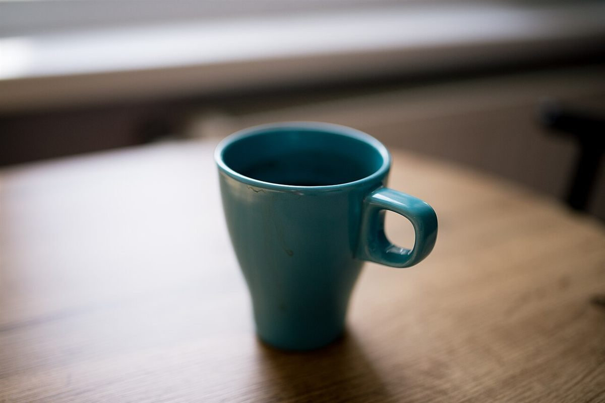
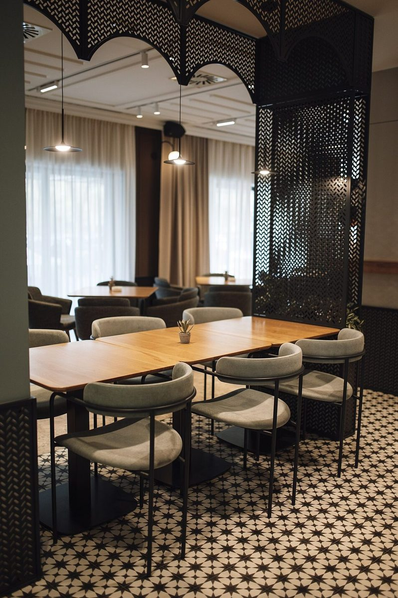
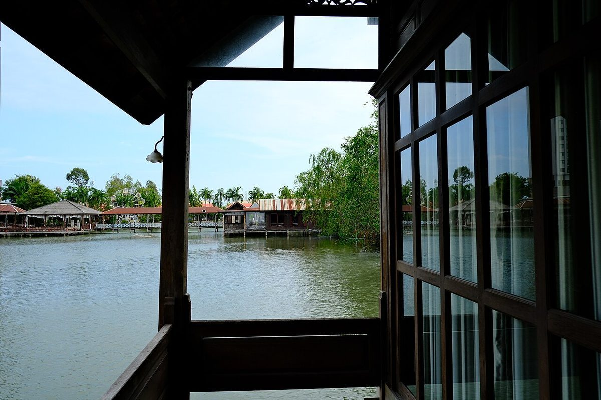

しとしと
店のこと
お店について確認できているのは、所在地とInstagramのアカウントだけです。
確認できていること
- 店名は「cafe kalon」、業種はカフェ
- 所在地は静岡県磐田市中泉1275-3(〒438-0078)
- 電話番号はなし。連絡はInstagramから
- 営業時間・定休日・メニュー・価格・ご予約・駐車場は準備中
店名の意味・由来、お店のこだわりや提供内容は、確認できていないため書いていません。

制作側の連想
軒先の想像
このページの「雨宿りの軒先」というテーマは、制作側が屋号と業種(カフェ)から連想したものです。お店の理念・由来とは無関係で、店名の意味や由来は分かりません。
ふいに降ってきた雨のとき、人は軒先で空を見上げます。そんな「ひと休みの場所」というカフェの一般的なイメージを、ページ全体の見立てにしました。写真は窓、雨粒、器など、雰囲気だけを借りたものです。

